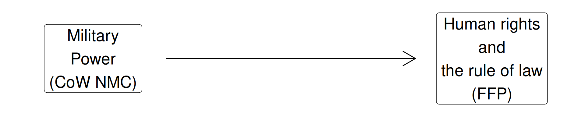
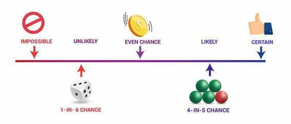
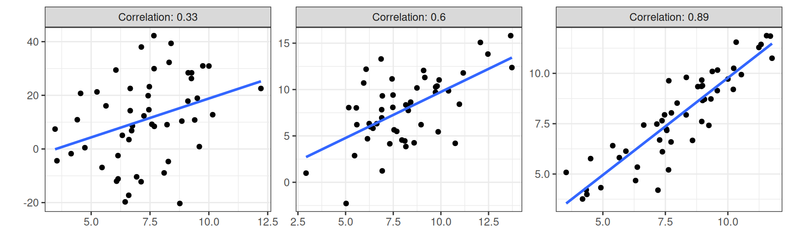
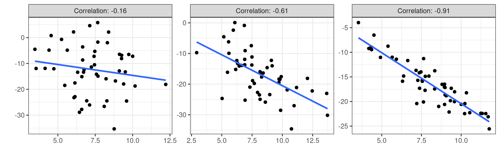
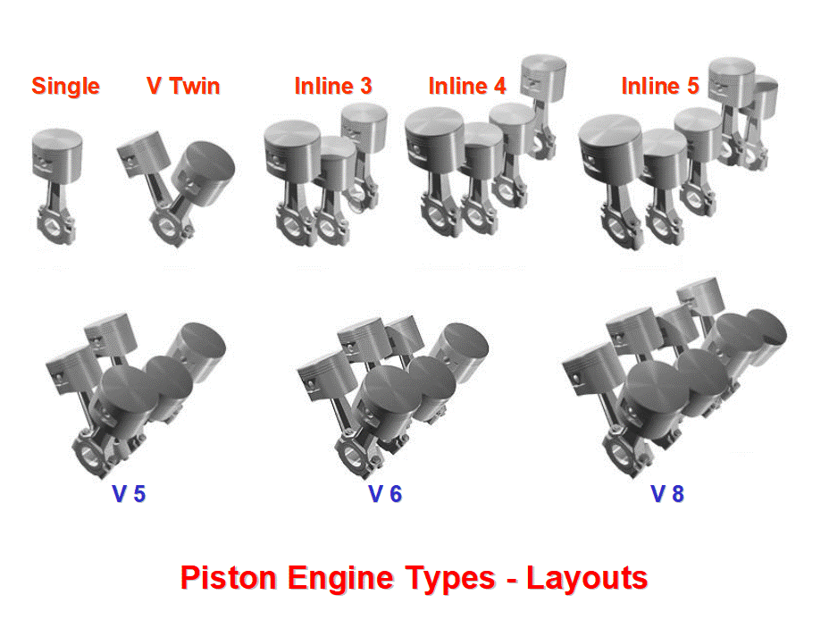
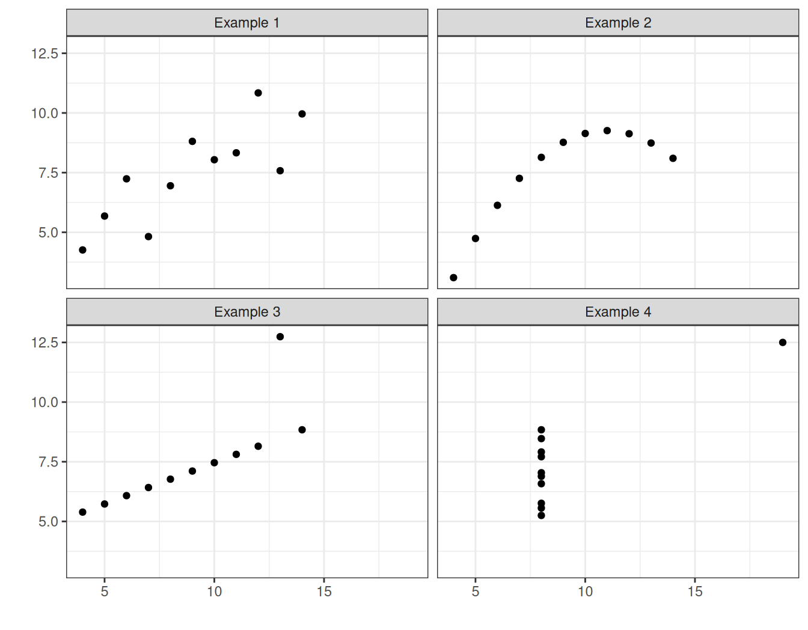

| manufacturer | model | displ | year | cyl | trans | drv | cty | hwy | fl | class |
|---|---|---|---|---|---|---|---|---|---|---|
| ford | expedition 2wd | 5.4 | 1999 | 8 | auto(l4) | r | 11 | 17 | r | suv |
| subaru | impreza awd | 2.5 | 2008 | 4 | auto(s4) | 4 | 20 | 25 | p | compact |
| volkswagen | passat | 2.8 | 1999 | 6 | manual(m5) | f | 18 | 26 | p | midsize |
| ford | explorer 4wd | 5.0 | 1999 | 8 | auto(l4) | 4 | 13 | 17 | r | suv |
| dodge | caravan 2wd | 2.4 | 1999 | 4 | auto(l3) | f | 18 | 24 | r | minivan |
| hyundai | tiburon | 2.0 | 1999 | 4 | auto(l4) | f | 19 | 26 | r | subcompact |
| audi | a4 quattro | 2.0 | 2008 | 4 | auto(s6) | 4 | 19 | 27 | p | compact |
| toyota | corolla | 1.8 | 1999 | 4 | auto(l3) | f | 24 | 30 | r | compact |
| pontiac | grand prix | 5.3 | 2008 | 8 | auto(s4) | f | 16 | 25 | p | midsize |
Today’s Agenda
Bivariate Analyses
- Descriptive Statistics and Correlations
Justin Leinaweaver (Spring 2025)
Are powerful states more likely to respect the human rights of their citizens?

Tidyverse Dataset: mpg
3. Variable type determines the tool

Bivariate Analyses
Categorical x Categorical
| manufacturer | model | displ | year | cyl | trans | drv | cty | hwy | fl | class |
|---|---|---|---|---|---|---|---|---|---|---|
| ford | expedition 2wd | 5.4 | 1999 | 8 | auto(l4) | r | 11 | 17 | r | suv |
| subaru | impreza awd | 2.5 | 2008 | 4 | auto(s4) | 4 | 20 | 25 | p | compact |
| volkswagen | passat | 2.8 | 1999 | 6 | manual(m5) | f | 18 | 26 | p | midsize |
| ford | explorer 4wd | 5.0 | 1999 | 8 | auto(l4) | 4 | 13 | 17 | r | suv |
| dodge | caravan 2wd | 2.4 | 1999 | 4 | auto(l3) | f | 18 | 24 | r | minivan |
| hyundai | tiburon | 2.0 | 1999 | 4 | auto(l4) | f | 19 | 26 | r | subcompact |
| audi | a4 quattro | 2.0 | 2008 | 4 | auto(s6) | 4 | 19 | 27 | p | compact |
| toyota | corolla | 1.8 | 1999 | 4 | auto(l3) | f | 24 | 30 | r | compact |
| pontiac | grand prix | 5.3 | 2008 | 8 | auto(s4) | f | 16 | 25 | p | midsize |
Categorical x Categorical
Univariate Analyses
auto(av) auto(l3) auto(l4) auto(l5) auto(l6)
5 2 83 39 6
auto(s4) auto(s5) auto(s6) manual(m5) manual(m6)
3 3 16 58 19 Categorical x Categorical
Univariate Analyses
auto(av) auto(l3) auto(l4) auto(l5) auto(l6)
0.021367521 0.008547009 0.354700855 0.166666667 0.025641026
auto(s4) auto(s5) auto(s6) manual(m5) manual(m6)
0.012820513 0.012820513 0.068376068 0.247863248 0.081196581 Bivariate Analyses
4 f r
auto(av) 0.000000000 0.021367521 0.000000000
auto(l3) 0.000000000 0.008547009 0.000000000
auto(l4) 0.145299145 0.158119658 0.051282051
auto(l5) 0.123931624 0.034188034 0.008547009
auto(l6) 0.008547009 0.008547009 0.008547009
auto(s4) 0.008547009 0.004273504 0.000000000
auto(s5) 0.004273504 0.008547009 0.000000000
auto(s6) 0.029914530 0.034188034 0.004273504
manual(m5) 0.089743590 0.141025641 0.017094017
manual(m6) 0.029914530 0.034188034 0.017094017Bivariate Analyses
Categorical x Categorical
What proportion of SUVs (class) are four wheel drive (drv)?
Bivariate Analyses
Categorical x Categorical
What proportion of SUVs (class) are four wheel drive (drv)?
4 f r
2seater 0.00000000 0.00000000 0.02136752
compact 0.05128205 0.14957265 0.00000000
midsize 0.01282051 0.16239316 0.00000000
minivan 0.00000000 0.04700855 0.00000000
pickup 0.14102564 0.00000000 0.00000000
subcompact 0.01709402 0.09401709 0.03846154
suv 0.21794872 0.00000000 0.04700855Bivariate Analyses
4 f r
2seater 0.00000000 0.00000000 1.00000000
compact 0.25531915 0.74468085 0.00000000
midsize 0.07317073 0.92682927 0.00000000
minivan 0.00000000 1.00000000 0.00000000
pickup 1.00000000 0.00000000 0.00000000
subcompact 0.11428571 0.62857143 0.25714286
suv 0.82258065 0.00000000 0.17741935
4 f r
2seater 0.00000000 0.00000000 0.20000000
compact 0.11650485 0.33018868 0.00000000
midsize 0.02912621 0.35849057 0.00000000
minivan 0.00000000 0.10377358 0.00000000
pickup 0.32038835 0.00000000 0.00000000
subcompact 0.03883495 0.20754717 0.36000000
suv 0.49514563 0.00000000 0.44000000“Probability is the study of events and outcomes involving an element of uncertainty”

Source: Wheelan (2014), 71
“Probability is the study of events and outcomes involving an element of uncertainty”
4 f r
2seater 0.00000000 0.00000000 1.00000000
compact 0.25531915 0.74468085 0.00000000
midsize 0.07317073 0.92682927 0.00000000
minivan 0.00000000 1.00000000 0.00000000
pickup 1.00000000 0.00000000 0.00000000
subcompact 0.11428571 0.62857143 0.25714286
suv 0.82258065 0.00000000 0.17741935Bivariate Analyses
Categorical x Numeric
| manufacturer | model | displ | year | cyl | trans | drv | cty | hwy | fl | class |
|---|---|---|---|---|---|---|---|---|---|---|
| ford | expedition 2wd | 5.4 | 1999 | 8 | auto(l4) | r | 11 | 17 | r | suv |
| subaru | impreza awd | 2.5 | 2008 | 4 | auto(s4) | 4 | 20 | 25 | p | compact |
| volkswagen | passat | 2.8 | 1999 | 6 | manual(m5) | f | 18 | 26 | p | midsize |
| ford | explorer 4wd | 5.0 | 1999 | 8 | auto(l4) | 4 | 13 | 17 | r | suv |
| dodge | caravan 2wd | 2.4 | 1999 | 4 | auto(l3) | f | 18 | 24 | r | minivan |
| hyundai | tiburon | 2.0 | 1999 | 4 | auto(l4) | f | 19 | 26 | r | subcompact |
| audi | a4 quattro | 2.0 | 2008 | 4 | auto(s6) | 4 | 19 | 27 | p | compact |
Categorical x Numeric
Bivariate Analyses
Categorical x Numeric
The Aggregate Function
drv cty.Min. cty.1st Qu. cty.Median cty.Mean cty.3rd Qu. cty.Max.
1 4 9.0000 13.0000 14.0000 14.3301 16.0000 21.0000
2 f 11.0000 18.0000 19.0000 19.9717 21.0000 35.0000
3 r 11.0000 12.0000 15.0000 14.0800 15.0000 18.0000Practice: Redo the above for highway fuel economy (hwy)
Bivariate Analyses
Categorical x Numeric
drv cty.Min. cty.1st Qu. cty.Median cty.Mean cty.3rd Qu. cty.Max.
1 4 9.0000 13.0000 14.0000 14.3301 16.0000 21.0000
2 f 11.0000 18.0000 19.0000 19.9717 21.0000 35.0000
3 r 11.0000 12.0000 15.0000 14.0800 15.0000 18.0000Bivariate Analyses
Numeric x Numeric
| manufacturer | model | displ | year | cyl | trans | drv | cty | hwy | fl | class |
|---|---|---|---|---|---|---|---|---|---|---|
| ford | expedition 2wd | 5.4 | 1999 | 8 | auto(l4) | r | 11 | 17 | r | suv |
| subaru | impreza awd | 2.5 | 2008 | 4 | auto(s4) | 4 | 20 | 25 | p | compact |
| volkswagen | passat | 2.8 | 1999 | 6 | manual(m5) | f | 18 | 26 | p | midsize |
| ford | explorer 4wd | 5.0 | 1999 | 8 | auto(l4) | 4 | 13 | 17 | r | suv |
| dodge | caravan 2wd | 2.4 | 1999 | 4 | auto(l3) | f | 18 | 24 | r | minivan |
| hyundai | tiburon | 2.0 | 1999 | 4 | auto(l4) | f | 19 | 26 | r | subcompact |
| audi | a4 quattro | 2.0 | 2008 | 4 | auto(s6) | 4 | 19 | 27 | p | compact |
| toyota | corolla | 1.8 | 1999 | 4 | auto(l3) | f | 24 | 30 | r | compact |
| pontiac | grand prix | 5.3 | 2008 | 8 | auto(s4) | f | 16 | 25 | p | midsize |
Bivariate Analyses
Numeric x Numeric
displ cty.Min. cty.1st Qu. cty.Median cty.Mean cty.3rd Qu. cty.Max.
1 1.6 23.00000 24.00000 24.00000 24.80000 25.00000 28.00000
2 1.8 16.00000 18.75000 24.00000 22.50000 25.75000 28.00000
3 1.9 29.00000 31.00000 33.00000 32.33333 34.00000 35.00000
4 2.0 19.00000 19.00000 20.00000 20.23810 21.00000 22.00000
5 2.2 19.00000 21.00000 21.00000 20.66667 21.00000 21.00000
6 2.4 18.00000 19.00000 21.00000 20.15385 21.00000 22.00000
7 2.5 18.00000 18.75000 20.00000 19.70000 20.00000 23.00000
8 2.7 15.00000 15.75000 16.00000 16.12500 17.00000 17.00000
9 2.8 15.00000 16.00000 16.50000 16.50000 17.00000 18.00000
10 3.0 17.00000 17.75000 18.00000 17.87500 18.00000 19.00000
11 3.1 15.00000 17.00000 17.50000 17.16667 18.00000 18.00000
12 3.3 11.00000 15.00000 16.00000 15.88889 17.00000 19.00000
13 3.4 15.00000 15.00000 15.00000 15.00000 15.00000 15.00000
14 3.5 18.00000 19.00000 19.00000 18.80000 19.00000 19.00000
15 3.6 17.00000 17.00000 17.00000 17.00000 17.00000 17.00000
16 3.7 14.00000 14.50000 15.00000 14.66667 15.00000 15.00000
17 3.8 15.00000 15.75000 16.50000 16.62500 18.00000 18.00000
18 3.9 13.00000 13.00000 13.00000 13.33333 13.50000 14.00000
19 4.0 11.00000 14.00000 15.00000 14.60000 16.00000 17.00000
20 4.2 12.00000 13.50000 14.00000 14.00000 14.50000 16.00000
21 4.4 12.00000 12.00000 12.00000 12.00000 12.00000 12.00000
22 4.6 11.00000 13.00000 13.00000 13.36364 15.00000 15.00000
23 4.7 9.00000 9.00000 13.00000 11.88235 14.00000 14.00000
24 5.0 13.00000 13.00000 13.00000 13.00000 13.00000 13.00000
25 5.2 11.00000 11.00000 11.00000 11.00000 11.00000 11.00000
26 5.3 11.00000 11.75000 14.00000 13.33333 14.00000 16.00000
27 5.4 11.00000 11.00000 11.50000 11.87500 12.25000 14.00000
28 5.6 12.00000 12.00000 12.00000 12.00000 12.00000 12.00000
29 5.7 11.00000 13.00000 13.00000 13.37500 13.50000 16.00000
30 5.9 11.00000 11.00000 11.00000 11.00000 11.00000 11.00000
31 6.0 12.00000 12.00000 12.00000 12.00000 12.00000 12.00000
32 6.1 11.00000 11.00000 11.00000 11.00000 11.00000 11.00000
33 6.2 15.00000 15.25000 15.50000 15.50000 15.75000 16.00000
34 6.5 14.00000 14.00000 14.00000 14.00000 14.00000 14.00000
35 7.0 15.00000 15.00000 15.00000 15.00000 15.00000 15.00000Cut: Convert Numeric to Factor
cut(x, breaks, labels)
‘x’ is the variable to transform
‘breaks’ lists the cut-off points for the groups
‘labels’ lists the names of the new groups
Cut: Convert Numeric to Factor
cut(x, breaks, labels)
Numeric x Numeric (cut)
Univariate Analysis
Small Large
163 71 Min. 1st Qu. Median Mean 3rd Qu. Max.
9.00 14.00 17.00 16.86 19.00 35.00 Bivariate Analysis
Numeric x Numeric (cut)
Practice: Summarize city fuel economy using the four quartiles of displ (e.g. 25th, 50th, 75th and 100th percentile)
cut(x, breaks, labels)
aggregate(data, y ~ x, FUN)
Numeric x Numeric
displ2 cty.Min. cty.1st Qu. cty.Median cty.Mean cty.3rd Qu. cty.Max.
1 1st Quartile 16.00000 19.00000 21.00000 21.72581 22.75000 35.00000
2 2nd Quartile 11.00000 16.00000 18.00000 17.65574 19.00000 23.00000
3 3rd Quartile 11.00000 13.75000 15.00000 14.98214 16.00000 19.00000
4 4th Quartile 9.00000 11.00000 13.00000 12.40000 14.00000 16.00000Bivariate Analyses
Numeric x Numeric
| manufacturer | model | displ | year | cyl | trans | drv | cty | hwy | fl | class |
|---|---|---|---|---|---|---|---|---|---|---|
| ford | expedition 2wd | 5.4 | 1999 | 8 | auto(l4) | r | 11 | 17 | r | suv |
| subaru | impreza awd | 2.5 | 2008 | 4 | auto(s4) | 4 | 20 | 25 | p | compact |
| volkswagen | passat | 2.8 | 1999 | 6 | manual(m5) | f | 18 | 26 | p | midsize |
| ford | explorer 4wd | 5.0 | 1999 | 8 | auto(l4) | 4 | 13 | 17 | r | suv |
| dodge | caravan 2wd | 2.4 | 1999 | 4 | auto(l3) | f | 18 | 24 | r | minivan |
| hyundai | tiburon | 2.0 | 1999 | 4 | auto(l4) | f | 19 | 26 | r | subcompact |
| audi | a4 quattro | 2.0 | 2008 | 4 | auto(s6) | 4 | 19 | 27 | p | compact |
| toyota | corolla | 1.8 | 1999 | 4 | auto(l3) | f | 24 | 30 | r | compact |
Correlation
1) A Measure of Linear Association

Correlation
2) Always between -1 and 1

Correlation
3) No Units Attached

Which has the largest correlation?

Anscombe’s Quartet (1973)

| Group | MeanX | MeanY | Correlation |
|---|---|---|---|
| Example 1 | 9 | 7.5 | 0.82 |
| Example 2 | 9 | 7.5 | 0.82 |
| Example 3 | 9 | 7.5 | 0.82 |
| Example 4 | 9 | 7.5 | 0.82 |
Correlations in R
Pearson's product-moment correlation
data: mpg$cty and mpg$hwy
t = 49.585, df = 232, p-value < 2.2e-16
alternative hypothesis: true correlation is not equal to 0
95 percent confidence interval:
0.9433129 0.9657663
sample estimates:
cor
0.9559159 Practice using the diamonds dataset
| price | cut | clarity | carat |
|---|---|---|---|
| 1912 | Ideal | VVS2 | 0.50 |
| 1728 | Good | VS1 | 0.57 |
| 5886 | Very Good | VS2 | 1.01 |
| 3946 | Good | VS2 | 0.93 |
| 1792 | Premium | SI2 | 0.70 |
| 732 | Ideal | SI1 | 0.31 |
| 2052 | Premium | SI1 | 0.57 |
| 7161 | Very Good | SI2 | 1.50 |
| 8808 | Very Good | SI2 | 1.54 |
| 2482 | Ideal | VVS2 | 0.50 |
| 11011 | Ideal | SI1 | 1.55 |
| 9447 | Premium | SI1 | 1.42 |
Analyze the relationship between:
cutandclaritycutandpricecaratandprice(convertcaratto a categorical variable)caratandprice(correlation)
Source: diamonds dataset in tidyverse